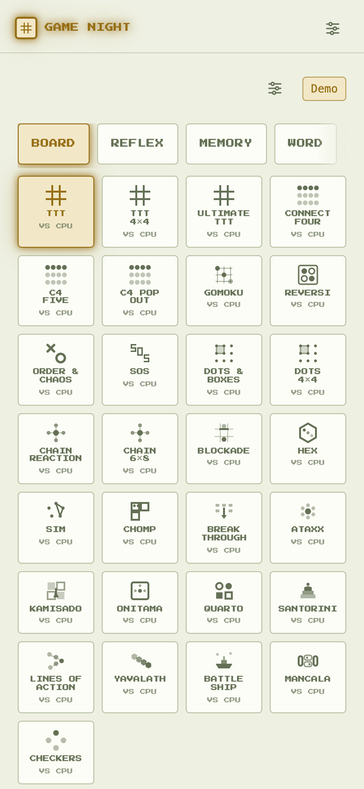
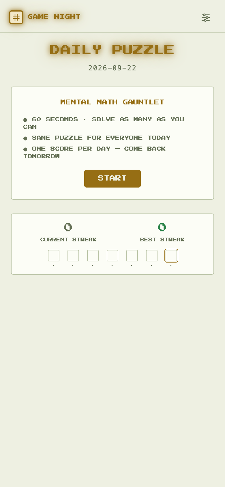
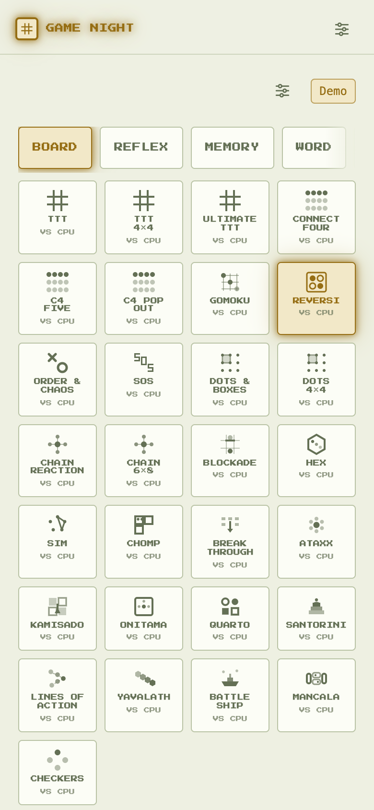
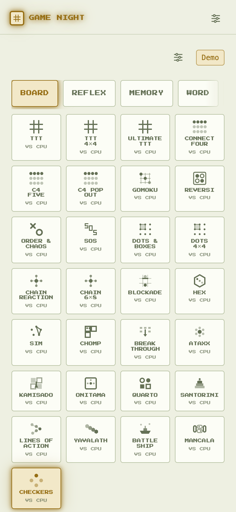
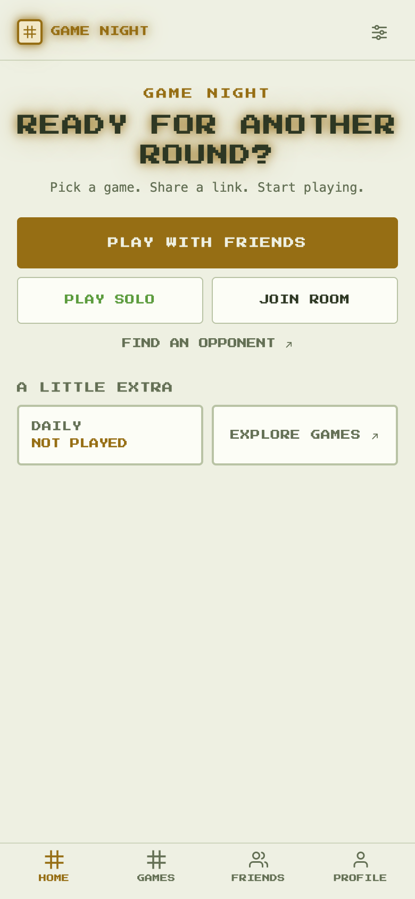

Read-only pass over the whole platform (67 registry entries): game-logic checklist, hidden-info
handling, real-time transport, Firebase rules, UX-audit status, hygiene. No code was changed.
Evidence screenshots below were captured from the live dev server at
localhost:5173. The most important discovery is not in any game —
a finished branch that was never merged.
Branch quick-wins-ux (worktree ../games-platform-quickwins,
7 commits, 44 files, +943/−135) carries a report that says “ready to bring into the main folder
with git merge quick-wins-ux”. It was never merged. Verified absent on main:
waitingCopy) — zero hits.Demo, not “PRACTICE · VS CPU”. (F-40’s VS CPU tile tags did land.)Meanwhile ~15 worktrees exist across .treehouse/, .claude/worktrees/ and Dev/personal/, and .claude/worktrees/fix-all-games ships inside the repo — so every test suite and lint run executes twice and half the lint errors live in that copy. Merge or abandon each branch, then delete the in-repo worktree.

src/lib/realtime/rtc.js status contract is
connecting|connected|failed|closed — there is no reconnecting. During the
5s ICE-disconnect grace the peer still reports connected, so Pong/Snake/Tron hosts keep
simulating and can score against a vanished opponent using the last cached input. An intentional
closed also falls into the “SIGNAL LOST — RECONNECTING” overlay forever. Your own F-47
plan documents all of this; it is written but unimplemented. Ship it first.
src/lib/profile.js — recordMatch is still 2P-only. Wins in
Chain Reaction 4P, Herd Mind, Trivia, Fibbage, Spyfair and Sketch never reach
users/{uid}/stats or the friends leaderboard (F-33 v1). Extend it: member of winning
side / last survivor. Cheapest retention win left.

src/pages/WordRaceGame.jsx (~line 148) publishes
round.answerIndex into the room node at round start. The answers array is a public
bundle and games/$id is readable by any authenticated user — devtools shows the current
answer before reveal. Fix: publish only the seed; both clients already run the same deterministic
pickAnswer. Same class (lower stakes): Password publishes wordIndex;
Fibbage publishes promptIndex into a 27-fact deck.
paska, sluts). Needs a denylist pass, not more content.src/components/ReversiBoard.jsx renders bare colored discs — no glyph, no shape. Checkers fixed the identical problem by printing the side letter on every piece (GAMEPLAY-04 comment). Adopt the same treatment. Everything else we spot-checked (Checkers, Mancala, SOS, Word Co-op) uses real buttons with aria labels — good.


src/lib/breakthroughLogic.js — the no-legal-move loss is checked only after a move; a side stuck with zero legal moves at the start of its own turn has no test pinning the behavior. The code comment argues the position is unreachable — fine, but pin it with a unit test so refactors can’t silently change it.
fd0634b: match closure, trap tell, feel pass).
makeCommit/verifyReveal unused): half-removed path worth a second look.react-hooks/purity errors on Date.now() in handler closures in Game.jsx / DailyGame.jsx — tune or relocate.FIELD_NULLS covers every new game’s keys — checked arrows, cr4, kamisado, onitama, quarto, santorini.| # | Action | Finding |
|---|---|---|
| 1 | Merge or explicitly abandon quick-wins-ux; clean the worktree pile | R1 |
| 2 | Implement F-47 reconnecting-pause per the written plan | R2 |
| 3 | Seed-derive Word Race answers (and Password / Fibbage indices) | R4 |
| 4 | Dictionary denylist pass | R5 |
| 5 | Extend recordMatch to party games | R3 |
| 6 | Reversi side-letter glyph | R6 |
| 7 | Hygiene sweep (tmp files, Herd imports, lint, docs) | R7–R9 |